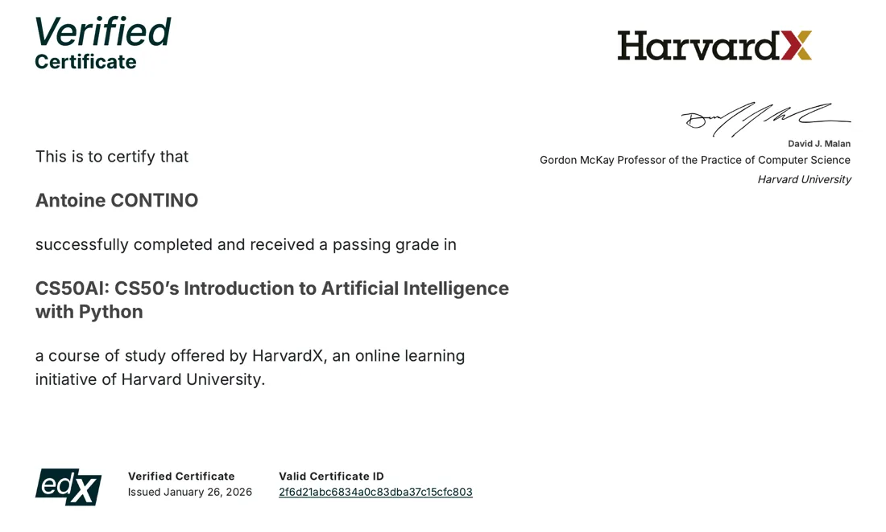

La garantie de midi
« À midi, si votre équipe juge que la journée ne vaut pas son prix, on s’arrête là. Vous ne payez rien. »
Formation IA pour les PME du Grand Est
Je forme votre équipe en une journée, chez vous et sur vos dossiers.
Rendez-vous pris via Calendly. Vos données : politique de confidentialité
10 h de temps gagné chaque semaine pour la dirigeante formée le 8 septembre 2026 en Moselle.
Vos équipes rédigent ces textes toute la semaine. La journée reprend ce travail tâche par tâche avec les personnes qui le font.
L’Accélérateur IA 30 jours s’adresse aux PME du Grand Est.
Aucun prérequis technique : si vous savez écrire un mail, vous savez suivre la journée.
La journée se rembourse en un an quand chaque personne gagne ce temps chaque semaine. Plus le salaire monte, plus le seuil baisse.
La garantie porte sur une heure.
| Salaire net par mois | Coût de l’heure pour l’entreprise | Seuil par personne et par semaine |
|---|---|---|
| 2 000 € | 21,37 € | 60 minutes |
| 2 500 € | 28,38 € | 45 minutes |
| 3 000 € | 34,97 € | 37 minutes |
| 5 000 € | 59,95 € | 21 minutes |
Le calcul : 4 900 € HT ÷ coût de l’heure ÷ 5 personnes ÷ 46 semaines. Le coût de l’heure vient du coût employeur mensuel divisé par 151,67 heures. Coût employeur calculé avec le modèle de l’URSSAF : CDI non-cadre à temps plein dans une entreprise de 20 salariés, règles au 1er juillet 2026.
Offre de base
7 h sur site avec 5 personnes, sur vos documents réels anonymisés. Chacun repart avec son outil, en service le soir même.
Ce que ça règle« Les exemples génériques, il faut les transposer seul. »
Valeur 3 500 €
Offre de base
Vous décrivez la tâche comme à un collègue. Il vous pose ses questions puis écrit la consigne complète à donner à l’IA.
Ce que ça règle« Il faut savoir écrire des prompts. »
Valeur 1 400 €
Bonus
Tom passe votre activité au crible et vous rend un document de stratégie complet : l’offre, la recherche de clients, les prix et les ventes complémentaires. Chaque recommandation est justifiée. Il applique les leçons que j’ai tirées des livres de stratégie que j’ai étudiés. Fonctionne avec Claude, ChatGPT ou Gemini.
Ce que ça règle« Nos ventes plafonnent. »
Valeur 3 000 € Offert
Bonus
Charlie écrit ou corrige vos pages de vente, publicités, mails, séquences de lancement, posts et scripts vidéo. Il corrige un texte en listant chaque modification avec sa règle. Il écrit une pièce seule ou tout le kit de lancement à partir de la stratégie de Tom. Fonctionne avec Claude, ChatGPT ou Gemini.
Ce que ça règle« On ne sait pas vendre par écrit. »
Valeur 3 000 € Offert
Bonus
Paul prépare vos rendez-vous, votre pitch, le débrief de l’appel et des jeux de rôle où il joue le prospect. Il applique les leçons que j’ai tirées des livres de vente que j’ai étudiés. Fonctionne avec Claude, ChatGPT ou Gemini.
Ce que ça règle« Les prospects disent qu’ils vont réfléchir. »
Valeur 1 500 € Offert
Bonus
Un tableur que chaque personne remplit avant la journée. Je lis vos documents types et je chiffre les heures à reprendre tâche par tâche.
Ce que ça règle« L’IA ne vaudra pas le prix. »
Valeur 700 € Offert
Bonus
Deux séances de 1 h 30 à J+15 et à J+45. Chacun envoie ce qui coince la veille et on le règle écran partagé.
Ce que ça règle« Après une formation, tout retombe. »
Valeur 600 € Offert
Bonus
Une visio par mois pendant trois mois à date fixe. Chaque mois a son objectif.
Ce que ça règle« Après une formation, tout retombe. »
Offert pour une signature dans les 7 jours après l’audit.
Valeur 900 € Offert
Valeur totale14 600 €
Votre prix4 900 € HT
Pour 5 personnes au plus. Soit 5 880 € TTC.
Prix hors taxes, TVA 20 %. Conditions générales de vente
Rendez-vous pris via Calendly. Vos données : politique de confidentialité
Avant
Chaque personne note ses tâches d’écriture et le temps qu’elles prennent. Je chiffre les heures à reprendre. Le jour J, chacun sait par où commencer.
9 h
On règle les consignes permanentes et la mémoire. On relie le compte à votre messagerie et à vos documents. Chaque grand dossier a son espace. L’outil connaît alors votre métier.
On commence par la fin. Chaque personne choisit la tâche qu’elle veut alléger en premier. Puis on pose les règles de la journée et on apprend à anonymiser un dossier.
Rien de ce qui identifie quelqu’un n’entre dans l’outil
Chaque personne traite un vrai dossier avec l’IA. On compare le temps passé au temps habituel. Le premier gain se voit avant midi.
Midi
Votre équipe a vu son premier gain. Elle juge si la journée vaut son prix. Si la réponse est non, on s’arrête là et vous ne payez rien.
Après-midi
Chaque personne construit son outil sur la tâche choisie le matin. Elle le teste sur un cas réel et le corrige elle-même. C’est ce qui la rend autonome ensuite.
16 h 15
On reprend les problèmes posés dans la journée et les solutions trouvées. Chaque personne note son premier gain. On fixe les dates des deux visios.
Le soir
Un prompt simple à lancer à la maison. Il en dit long sur la personne qui le lance.
J+15
1 h 30 en visio avec l’équipe. On lève ce qui coince et on règle les outils sur les cas de la quinzaine.
J+30
Chaque personne compare le temps de sa tâche avec l’outil au temps d’avant. Sous une heure par semaine, je reviens sans frais travailler avec la personne.
J+45
1 h 30 en visio. Chaque outil gagne une nouvelle tâche de la carte des heures perdues.
Ensuite
Une visio par mois à date fixe. Offerts pour une signature dans les 7 jours après l’audit.
Quel est mon objectif final ? Qu’est-ce que j’attends, exactement ?
Chaque conversation avec l’IA commence par ces deux questions. Une attente claire au départ, et on ne part pas dans tous les sens.
Chaque nouveau sujet ouvre une nouvelle conversation. À chaque message, l’IA relit tout l’échange : mélanger les sujets l’embrouille et consomme votre quota d’utilisation pour rien.
« À midi, si votre équipe juge que la journée ne vaut pas son prix, on s’arrête là. Vous ne payez rien. »
« Si une personne de votre équipe ne gagne pas au moins une heure par semaine 30 jours après la journée, je reviens travailler avec elle sans frais jusqu’à ce qu’elle y arrive. »
Conditions : la personne fournit ses dossiers avant la journée, utilise l’outil construit pour elle, vient aux deux visios et participe à la mesure de J+30.
Le détail des garanties dans les conditions générales de vente
, en Moselle
10 heures gagnées chaque semaine
J’ai passé la journée avec la dirigeante d’un cabinet de coaching, dans ses locaux et sur ses propres dossiers.
Elle a pris l’accompagnement à l’année pour garder un cadre chaque mois.
| Critère | Formation IA de catalogue | Accélérateur IA 30 jours |
|---|---|---|
| Le résultat visé | Comprendre l’IA et ses usages | Une heure gagnée par semaine et par personne |
| Vos chances d’y arriver | Des exemples à transposer seul à votre métier | Vos propres dossiers et une garantie sur le résultat |
| Le délai avant le premier gain | Plus tard, quand chacun s’y met seul | Avant midi le jour de la formation |
| L’effort demandé | Tout refaire chez vous après la formation | Chacun repart avec son outil réglé sur son métier |
| Le groupe | Un grand groupe aux niveaux mélangés | Votre équipe seule, 5 personnes au plus |
| La date | La session part si assez de monde s’inscrit | Votre date, réservée pour votre équipe |
| Si un outil coince | Le formateur est parti à 17 h | Deux visios de déblocage à J+15 et à J+45 |
| Si le résultat manque | Le prix reste dû | Je reviens sans frais |
| La mesure | Un questionnaire de satisfaction | Le temps gagné par personne, chiffré à J+30 pour la direction |
La pratique régulière vous fait aller plus loin avec l’IA. Les formules à l’année vous donnent un cadre et des rendez-vous fixes.
Vous avancez seul
Un appui par écrit quand un outil coince ou qu’un nouveau besoin apparaît.
1 200 € HT par an
On avance ensemble
Une visio chaque mois, à date fixe. Un blocage : on trouve la solution ensemble. Un projet neuf : on le cadre avant de le construire.
3 600 € HT par an
Je construis pour vous
Une visio chaque semaine. Sur demande, je construis vos outils et je les mets en place sur site avec votre équipe.
Sur échange, deux clients au plus
COO d’IFS, atelier textile des Vosges, formateur IA
Depuis six ans, je suis COO d’IFS, un atelier textile des Vosges : coupe, couture, sublimation, DTF, broderie.
L’IA fait partie de mon travail de dirigeant depuis quatre ans, sur la veille des appels d’offres, le suivi de production et les contenus commerciaux.
Je forme des dirigeants avec ce que j’utilise moi-même, sur des tâches que je connais de l’intérieur.

Le cours d’intelligence artificielle de l’université Harvard, suivi sur edX : recherche, raisonnement, probabilités, optimisation, apprentissage automatique, réseaux de neurones, traitement du langage, avec des projets à coder en Python.
Ce que ça change pour vous : je sais comment ces outils fonctionnent de l’intérieur. Je peux vous dire pourquoi l’IA se trompe, où lui faire confiance et comment la régler sur votre métier.
La journée se fait avec l’outil que votre entreprise autorise. Chaque dossier est anonymisé avant d’entrer dans l’outil.
Chaque dossier est anonymisé avant d’entrer dans l’outil. Vos documents servent à la seule prestation et je les supprime à la fin du suivi.
Écrire un mail suffit pour suivre la journée. Les outils se construisent en français, dans une conversation.
La journée lance le travail sur vos vrais dossiers. Les deux visios et la mesure de J+30 prolongent le travail. Les trois mois de suivi Signature prennent ensuite le relais quand vous signez dans les 7 jours après l’audit.
Chaque personne part de ses propres tâches et construit son propre outil. Avec 5 personnes au plus, j’aide chacun à son rythme.
Une journée de 7 h sur site, de 9 h à 17 h. Ensuite, deux visios de 1 h 30 à J+15 et à J+45.
La carte des heures perdues part de vos usages actuels. La journée règle le compte sur votre métier et construit un outil par tâche.
Elle se trompe parfois. Chaque outil se teste sur un cas réel et la personne relit tout ce qui sort. L’IA prépare et la personne décide.
L’outil prend la part répétitive de l’écrit. La personne garde son savoir-faire et la décision. Le temps gagné revient au client et au terrain.
Chaque conversation commence par l’objectif fixé par la personne. L’outil prépare le premier jet et la personne garde la décision.
Deux visios de déblocage ont lieu à J+15 et à J+45. Les trois mois de suivi Signature prennent ensuite le relais.
Les licences d’IA restent à votre nom et à votre charge. La journée se fait avec l’outil que votre entreprise autorise.
Report ou annulation sans frais jusqu’à 15 jours avant la journée ; passé ce délai, l’acompte reste dû. Si je ne peux pas assurer la journée, je vous propose une nouvelle date. Si elle ne vous va pas, je vous rembourse l’acompte.
Comparez ce que vous recevez ligne par ligne. Le tableau du seuil montre le temps à gagner pour rentrer dans vos frais.
Transmettez-lui le tableau du seuil de rentabilité avec le devis. À J+30, la mesure du temps gagné lui donne le résultat en chiffres.
Vous me décrivez les tâches qui prennent du temps à votre équipe. Je vous dis ce que la journée en ferait.
Je prends 2 journées équipe par mois. Signez le devis dans les 7 jours après l’audit : je vous offre les trois mois de suivi Signature.
Rendez-vous pris via Calendly. Vos données : politique de confidentialité